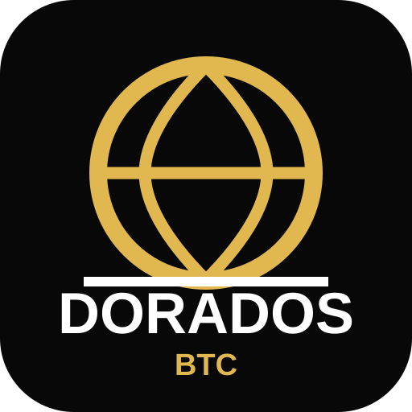

ÉLITE CHAMPIONS TOURNAMENT
DORADOS BTC
Selecciona la versión del tracker
Versión para el equipo
Rol, marcadores, tabla, escenarios y finales. Sin datos individuales de Kiara.
Abrir Team TrackerVersión familiar
Incluye todo el torneo y las estadísticas de Kiara Armendáriz #7.
Abrir Family Tracker